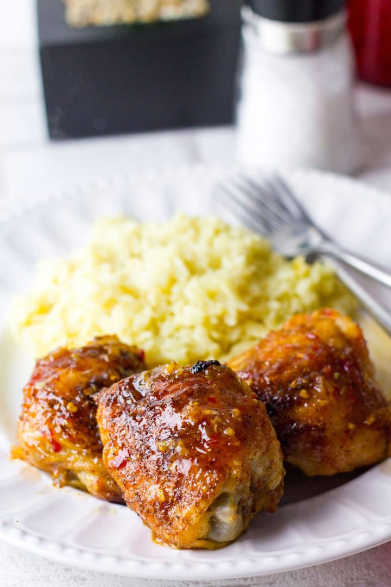

Spicy Thighs Save Lives With Rice

This yummy chicken dish has two different sauces and presents a wonderful kick to your rice when drizzled over the chicken and your lungs when you're simmering the spices over the open flame.
the combination savory and sweet in fiery sauce and the creamy relief from the second sauce will really remind you that chicken thighs are really the superior form of chicken to eat. Firmly you will realize after this dish that "thick thighs save lives" will also apply to these thighs. Enjoy
Ingredients
Marinade
- 6 minced garlic cloves
- 2 tsp cumin
- 4 garlic cloves crushed with back of knife
- pinch of oregano
- 2 tsp black pepper
- 2 Tbps Mayonnaise
- about 1 lb. Chicken Thighs
Sauce 1
- 1 Tbps ground Cayenne
- 1 tsp red pepper flakes
- 2 tsp sugar
- 3 Tbsp vinegar
- Juice from 1/2 lemon
- 1/4 cup water
- Large pinch of salt
Rice
- 1/4 onion
- 1 Tbsp butter
- 1 bay leaf
- 1 tsp cumin, turmeric, paprika
- 1 cup of rice
- 1 cup of chicken stock
Creamy sauce
- 1/4 cup mayonnaise
- 2 Tbps greek yogurt
- 1 tsp vinegar
- Juice from 1/4 lemon
- 1/2 tsp black pepper
- Pinch of Oregano, paprika, and salt
Steps
Prepare the Marinade
- mix all the Marinade ingredients and set aside, preheat the broiler
- preheat the broiler
- place all ingredients for spicy sauce in a small pot over medium heat
- Once the heat is built, simmer over low heat and taste, add more lemon or salt as needed
- Remove off the heat and place in the fridge to let cool
Rice Time
- Finely dice the 1/4 onion
- Melt butter over medium heat, add bay leaf, cumin, turmeric, and paprika along with diced onion
- stir for 40 seconds
- Add in cup of rice and lightly toast for 3 minutes
- Add chicken stock, raise to a boil
- Simmer on low for 20 minutes
Cooking the chicken
- Place chicken on foil lined cookie sheet
- Place under broiler 7 minutes, then flip
- Cook on 2nd side for 7 minutes
- Set aside
Making Creamy sauce
- Mix the ingredients in a large bowl, stir together and taste, salt as needed
To serve
- Quickly chop a tomato and thinly slice lettuce, place in cneter of plate
- Place cooked chicken on lettuce and rice on the edge of plate
- Drizzle Sauces over and Enjoy!
More Recipes
Home Page